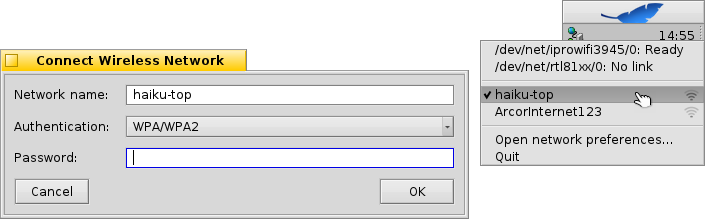

| Índice |
|
Cómo conectarse a una red inalámbrica Conectarse a través de la línea de comandos Hacer que funcione el hardware compatible |
Taller: Redes inalámbricas
Getting the networking to run is essential in today's need for permanent internet connection. As keeping up to date with all the different and ever changing hardware and drivers is quite impossible for a small project, Haiku relies on a compatibility layer to make use of FreeBSD and some OpenBSD networking drivers. This ensures a massive amount of supported hardware, though probably not 100% of what's out there.
 Como unirse a una red inalámbrica
Como unirse a una red inalámbrica
You can use the Desktop applet NetworkStatus to connect to a specific network.
Dele un clic derecho en el ícono de la Barra de Escritorio y seleccione el nombre público de la red (que es la "SSID" que difunde) desde el menú contextual.
A window opens where you enter the type of authentication (probably WPA/WPA2, WEP is not a secure encryption anymore!) and the password for that wireless network. Tick the checkbox below to so you don't have to enter all the information again next time you connect to this network.
Click to start the login process.
Depending on your hardware and network configuration this may take a while. You'll be kept informed of the progress by notifications:
Una vez que aparezca "Listo" y el ícono NetworkStatus de la Barra de Escritorio muestre una luz verde, la conexión estará establecida. Si las notificaciones terminan en "Sin conexión" y un triángulo amarillo, algo salió mal, tal vez una contraseña incorrecta.
Como unirse a la red desde la línea de comandos
Si prefiere usar la línea de comandos o quisiera hacer uso de scripts o el ~/config/settings/boot/UserBootscript para automatizar el unirse a una red específica al arrancar, existe la orden ifconfig.
Inicie una Terminal e ingrese la primera línea para rastrear las redes inalámbricas disponibles:
ifconfig /dev/net/iprowifi3945/0 scan name address signal auth haiku-top 01:d0:19:a6:88:42 30 WPA ArcorInternet123 00:20:12:a4:29:e1 15 WPA
Desde luego, debe adaptar la ruta a la de su dispositivo de red inalámbrica.
La salida muestra el nombre público (SSID), dirección MAC, intensidad de la señal y método de autenticación de todas las redes encontradas.
Para unirse a una red, use la siguiente línea e inserte el nombre público (SSID) y contraseña respectiva:
ifconfig /dev/net/iprowifi3945/0 join {SSID} {password}
Asegurese que la configuración inicial del adaptador de red inalámbrico después de arrancar, se ha completado, antes de proceder con las ordenes ifconfig, o serán ignoradas. Dependiendo de su configuración de red y hardware, esto podría tomar algo de tiempo. Debe estar atento a la notificaciones…
Como hacer funcionar hardware compatible
Todo el hardware de comunicación inalámbrica soportado funciona de forma predeterminada y no va a ser necesario descargar o instalar algún archivo de firmware suplementario.
Sólo algunos circuitos integrados o «chipsets» (como Intel 2100/2200/2225/2915, Broadcom 43xx, Marvell 88w8335) necesitan módulos de firmware binarios que sin embargo Haiku no puede incluir por cuestiones legales. Para hacer que estas tarjetas de inalámbricas funcionen, existe un comando sencillo que descargará e instalará en su lugar todos estos archivos propietarios.
Abra una Terminal y escriba:
install-wifi-firmwares.sh
Ahora lea la licencia y acéptela si está de acuerdo para instalar todos los archivos de firmware disponibles.
En caso que no pudiera obtener los archivos binarios de firmware a través del script install-wifi-firmwares.sh (por ejemplo, debido a una falta de conexión de otro tipo desde adentro de Haiku), también puede descargar este script de intérprete de comandos, y ejecutarlo desde otro sistema operativo que tenga instalados wget y zip.
Los usuarios de Windows deberán tener wget y zip para Windows instalados en sus ubicaciones predeterminadas y usar este archivo por lotes.
Con esto se descargaran los archivos requeridos, y se creará una archivo zip que deberá ser extraído en el directorio /boot de Haiku. Una vez desempacado, abra una Terminal e ingrese:
install-wifi-firmwares.sh
Repase las licencias y aceptela si está de acuerdo para instalar los archivos de firmware que estan ahora disponibles.